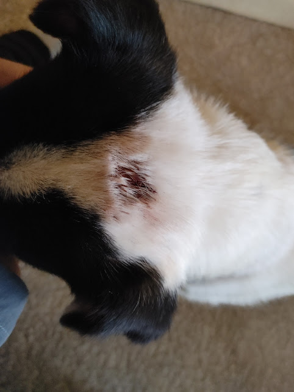
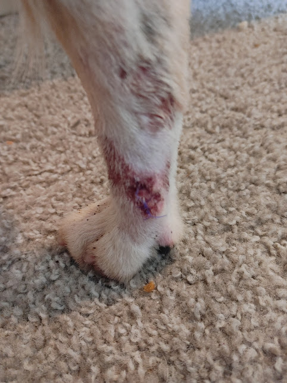
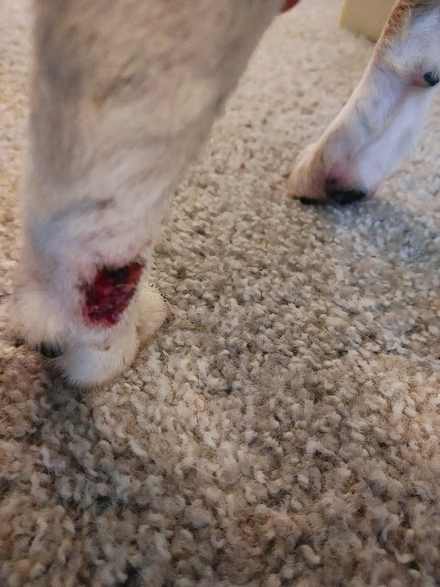
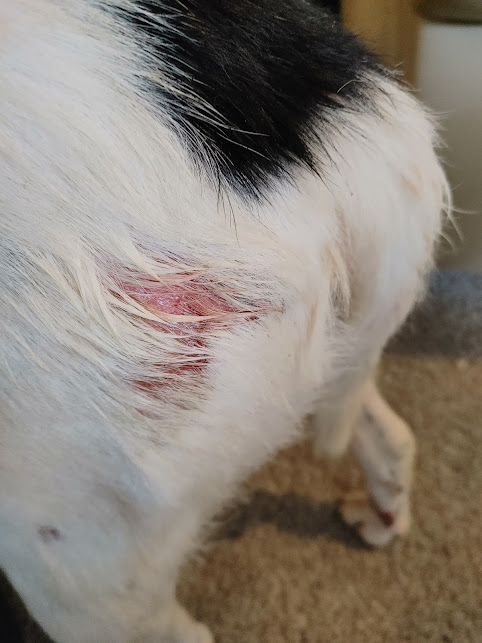
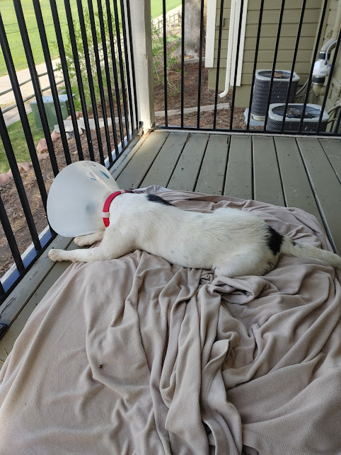

Keeley's Big Adventure
Oh hi there, I'm Keeley. This is me when I was living in a shelter when I didn't have a home. As you may be able to tell, that place made me a little anxious.
I really wasn't sure where I was, a lot of the other dogs were jerks, and it was always noisy with some kind of drama going down. The people were nice enough, though. Then, one day...

...this guy came to visit me. I had no idea who this guy was or how he knew I was here, but he seemed alright for a human. After visiting for a bit, he said he was taking me home.
Home? I didn't know I had a home, but if it got me out of that place I was all for it. So, off we went. After a harrowing car ride that felt like an eternity, we finally made it to my new home. It was all new and different, and, I have to admit, it was a bit of a rough start...




I was a liitle beat up from living on the streets and getting roughed up at the shelter. And the itching! Ugh, it was non-stop. I couldn't help but scratch constantly. I thought all of this was just a normal part of being a dog, but my new person said it wasn't normal at all. He wasn't too happy the shelter didn't do anything about it. So, off we went again.
Nooooo! Am I going back to that shelter?
Whew, thankfully it wasn't! It was my new doctor. It wasn't my favorite place, but they gave me some medicine and this stupid thing to put around my head...

I don't know if this is some new doggy fashion trend, but I hope it passes soon!
🐾 A Month Later 🐾
Good news! All of my itching went away, and my sores healed up. Best of all, I get to take this stupid thing off of my head and start doing real dog stuff like chasing squirrels up these trees, those trees, and every tree I can find. This is the best!